REVENGE MEMORIES / CHAPTER FOUR / 2026.10.23
第四章 · 十一处据点前后对照
0.10.14-environment十处战后据点加H10共享营站。同一真实据点记录分别用本轮开始时和当前渲染器捕获；地面通行范围、碰撞、剧情对象和出口坐标均保持。
H41
雪峡南口仍在室外雪地，撤离土路与积雪村屋保持。
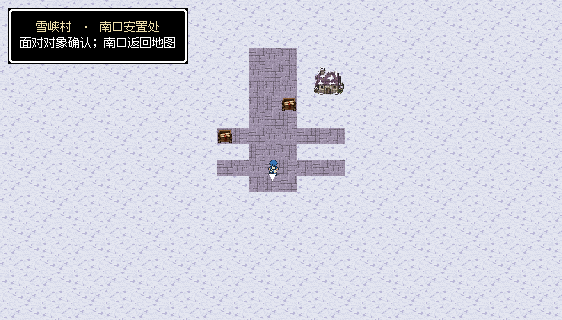
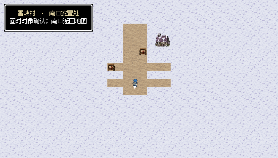
H42
铁骑关投送站用土道和石制设备坪，渔屋换同尺寸军营仓房。
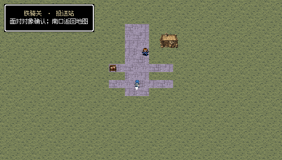
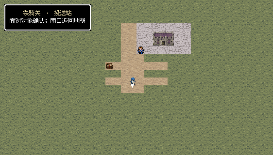
H43
日塔控制室为去顶室内，磨损石板、边界墙和控制设备代替雪地与雪顶小屋。
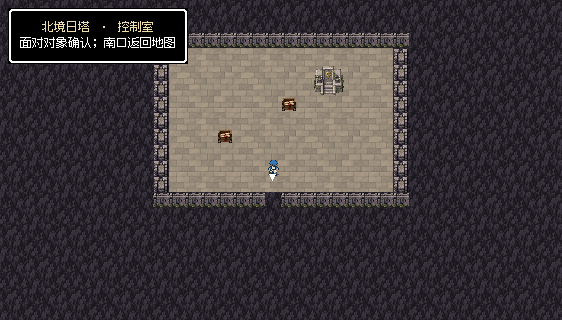
H44
王都后撤门是露天石铺医护院，仓房外观与伤兵撤退用途一致。
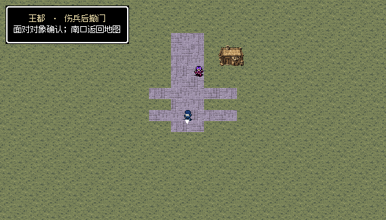
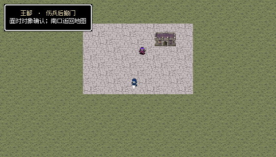
H45
沙城井台使用沙地、土路与石井台，取消盐地背景；黑昼延续。
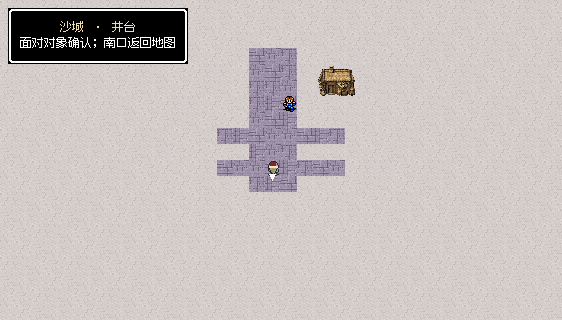
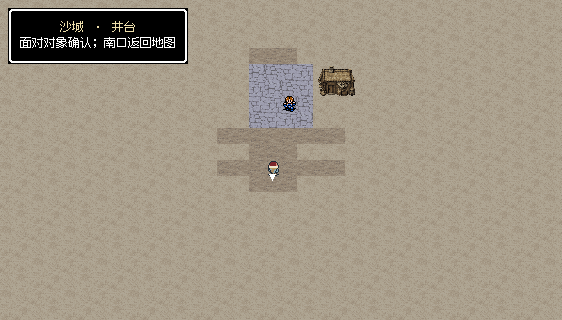
H46
观测台东楼为去顶室内，石地、边界墙、工作台和设备，不在屋内放整栋房屋。
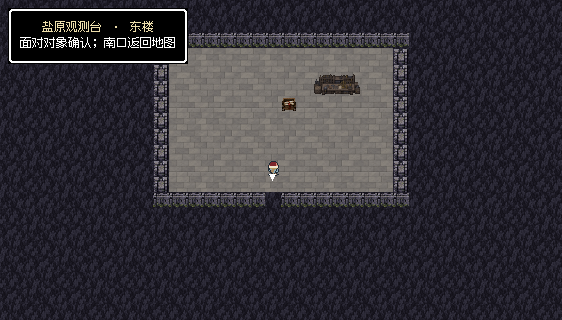
H47
沼泽船口使用露天木码头，南口接驳船明确离开方式；黑昼延续，邻近祭所完成两岸验证后局部变亮。
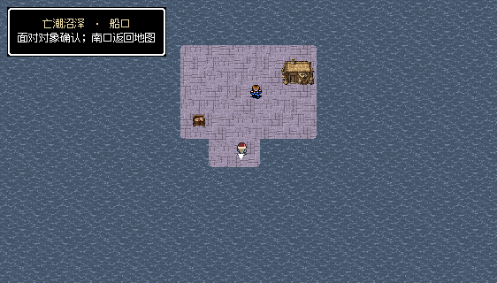
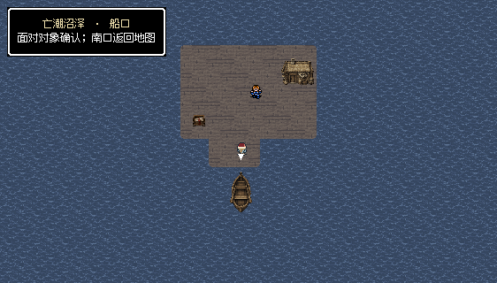
H48
祭所调节庭用露天石台、木登船口和接驳船；局部试验成功后恢复此处亮光。
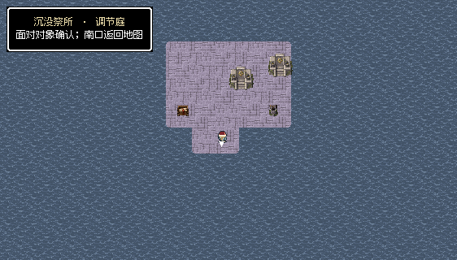
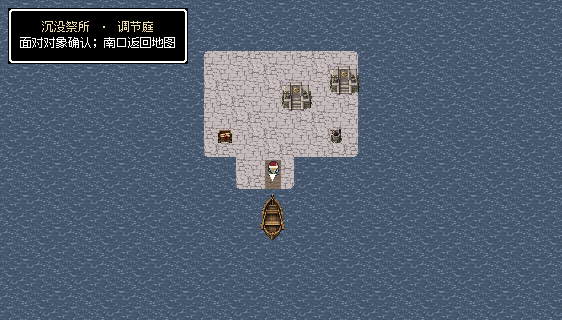
H49
黑钟村避难院保留雪地、清扫土道和积雪村舍。
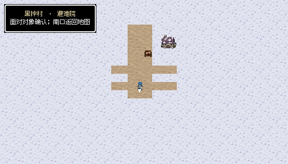
H50
孤岛诊疗处是岸上石质医护台与木登船口，接驳船连贯，黑昼保持。
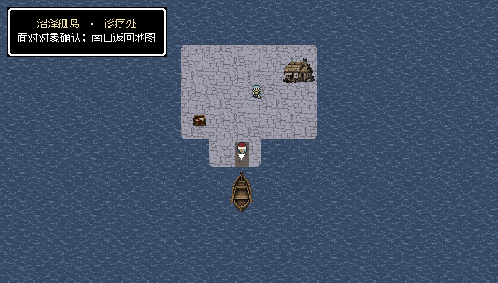
H10
会合营站沿用第三章沙岸、压实土道和陆地补给仓房。
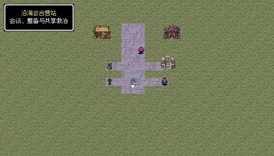
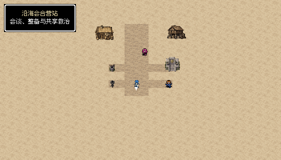
H43/H46的石墙画在原通行域之外，南出口保持打开；控制台、工作台沿用原建筑占地。H47/H48/H50展示接应码头与临时交接台，并非整座岛屿全景。H10复用第三章确认后的沙岸、土路与陆地补给仓房。
22处可见交互、221次普通按键与1460项显示范围检查通过。